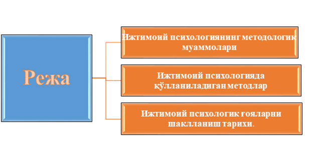
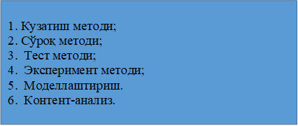
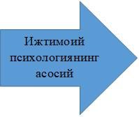
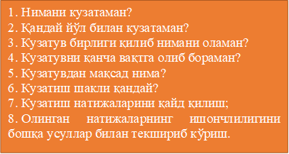
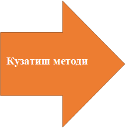
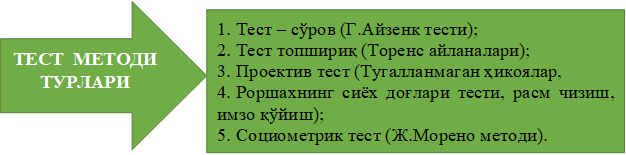
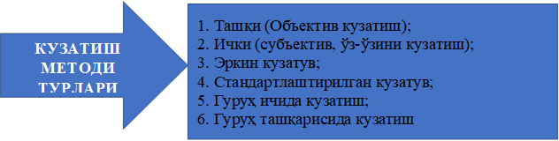
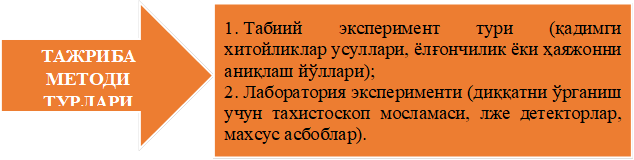
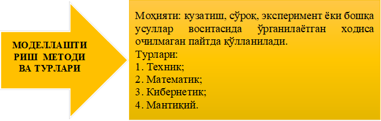

1-Режа. Ижтимоий психологиянинг методологик муаммолари
Ижтимоий психология тўғрисида гапириладиган бўлса, шуни алоҳида таъкидлаш лозимки, аввало жамиятнинг бу фан олдига қўяётган талаблари ўзига хос бўлиб, бу талаблар жавоб бериш учун унинг текшириш услублари у даражада мукаммал эмаслигидадир. Чунки шу давргача ижтимоий психологияда кузатилган ходиса шу бўлдики, бу фандаги назарий ишлар тадбиқий ишлардан анча кўпдир. Шунинг учун ҳам, Г.М.Андреева ижтимоий психологиянинг методологияси муамоларига тўхталар экан, унинг бу борадаги интилишлари, вазифалари кўплигини таъкидлайди.
Методологик муаммоларга қизиқиш, - деб ёзади у, - ижтимоий психологиянинг кучсизлиги эмас, балки унинг етилиш даврига кирганлигининг белгисидир. “Методология" тушунчасининг илмий моҳияти нимада? Бу тушунчани турли назарий қарашлардаги олимлар турлича шарҳлайдилар ва тушунадилар. Масалан, америкалик психологлар методология деганда, тадқиқот жараёнида ишлатиладнган барча тадқиқот услублари ва техник жараёнларни тушунадилар. Лекин “методология" тушунчаси аслида услублар йиғиндисидан ҳам кенгроқ тушунчадир. Яъни, “методология" тушунчаси “конкрет методлар" ёки техник усуллар тушунчаларидан кенгроқдир.
Ижтимоий психологик тадқиқотларнинг методологик муаммоларига қуйидагилар киради: Биринчидан, эмпирик маълумотлар муаммоси, яъни қай турдаги маълумотларни ижтимоий психологик маълумотлар сифатида қабул қилиш мумкин. Чунки бихевиористлар бундай маълумотлар сифатида кўз билан кўриб қайд қилинадиган хулқ-атвор шаклларини қабул қилишса, когнитив психология вакиллари фақат онгга тааллуқли бўлган белгиларни тушунадилар.
Демак, ҳар қандай тадқиқотчи иш бошламай туриб, аввало нимани эмпирик бирлик қилиб олишини аниқ тасаввур қилиши ва унинг назарий жиҳатлари тўғрисида тасаввурга эга бўлиши керак Бундан ташқари, тадқиқот бирлиги аниқланган тақдирда, қандай ҳажмдаги бирликлар тадқиқотчини қаноатлантириши масаласи ҳам муҳимдир.
Шунинг учун экспериментал ва корреляцион тадқиқотлар бор. Иккинчи методологик муаммо — бу у ёки бу ижтимоий психологик назария асосида қонуниятлар яратиш ва илмий тахминлар қилиш муаммоси. Илмий тадқикот бошлашдан олдин тадқиқотчи маълум тахминлар юритади, лекин шу тахминларнинг аниқ чиқиши ўша муаммо бўйича пишиқ - пухта назариянинг бор-йўқлигига бевосита боғлиқ.
Шунинг учун ижтимоий психологияда гипотезалар тузиш ва улар асосида керакли умумий хулоса чиқариш ишини билиш керакдир. Учинчи муаммо — бу ижтимоий психологик маълумотларнинг сифати масаласи, яъни қандай маълумотни сифатли, ишонарли деб аташ мумкинлиги масаласидир. Ўрганиш объектининг ҳажми ёки сони хусусида шуни айтиш мумкинки, кўпинча текширилувчи қанчалик кўп бўлса, маълумот шунчалик ишончли бўлади, деган нотўғри фикр мавжуд. Агар гипотезалар тўғри илгари сурилган бўлса, у кичикроқ гуруҳда ўтказган экспериментларининг маълумотига ҳам ишониши мумкин.
Лекин тадқиқот услубини - методларини тўғри танлашда пилотаж - синов тадқиқоти ўтказишнинг аҳамияти каттадир. Бунда ўша гипотезаларнинг қанчалик асослилигини ҳам, методиканинг айнан мақсадга мувофиқлигини ҳам, текширилувчилар объектининг тўғри танланганлигини ҳам, маълумотларнинг турғунлиги, ишончлилигини ҳам текшириб олиш мумкин. Бундан ташқари, шу босқичда тадқиқотчи эксперимент ёки анкета ўтказиш учун қулай вазият ва вақтни белгилаш, ўз ёрдамчиларининг ишга қанчалик яроқликларини ҳам синаб олиш имкониятига эга бўлади.
Методологик ишларга қарашли тадбирларнинг сифати ва савияси тадқиқотчининг қанчалик илмий саводхон эканлигини белгиловчи кўрсаткичлар ҳисобланади ва у ўтказган илмий тадқиқот ишининг баҳосини белгилайди.
2- Режа. Ижтимоий психологияда қўлланиладиган методлар
Аниқ изланиш предметига эга бўлган ҳар қандай фан ўша предметининг моҳиятини ёритиш ва материаллар тўплаш учун махсус усуллар ва воситалардан фойдаланади ва улар фаннинг методлари деб юритилади.
1-жадвал.
Ижтимоий психологиянинг асосий методлари
|
АСОСИЙ МЕТОДЛАР |
АСОСИЙ МЕТОДЛАРНИНГ ВАРИАНТЛАРИ |
|
КУЗАТИШ МЕТОДИ |
Ташқи (объектив кузатиш) Ички (субъектив, ўз-ўзини кузатиш) Эркин кузатув Стандартлаштирилган Гуруҳ ичида кузатиш Гуруҳ ташқарисида кузатиш |
|
СЎРОҚ МЕТОДЛАРИ |
Оғзаки сўроқ Ёзма сўроқ Эркин сўроқ (суҳбат) Стандартлаштирилган сўроқ |
|
ТЕСТЛАР МЕТОДИ |
Тест – сўров Тест - топшириқ Проектив тест Социометрик тест |
|
ЭКСПЕРИМЕНТ |
Табиий эксперимент Лаборатория эксперименти |
|
МОДЕЛЛАШТИРИШ |
Математик моделлаштириш Мантиқий моделлаштириш Техник моделлаштириш Кибернетик моделлаштириш |
|
ХУЖЖАТЛАРНИ ЎРГАНИШ МЕТОДИ
|
Ижтимоий ўрганиш Психологик ўрганиш Мотивацион ўрганиш Классификацион ўрганиш |
|
КОНТЕНТ-АНАЛИЗ МЕТОДИ |
Матнни анализ қилиш Абзацларни анализ қилиш Иборалар, тушунчаларни анализ қилиш |
Ижтимоий психология фанида қўлланиладиган методлар ўз мазмун моҳиятига кўра умумий психологиядаги методларга айнан ўхшаш бўлиши билан бирга, шахс ва жамият муносабатларини ифодалаб беришда, ижтимоий ҳодисаларни атрофлича ўрганишда ўзига хос методларни қўллаш зарур эканлиги билан ажралиб туради. Шунга кўра, биз ушбу жадвалда ижтимоий психологияда кўлланиладиган методларни келтирамиз.
Кузатиш методи ва унга қўйилган шартлар
Кузатиш методи ижтимоий психологияда ўзига хос ижтимоий шароитларда, ўзига хос вазиятларда ва маълум гуруҳларда ишлатилади. Бунда тадқиқотчи энг аввало нимани кузатаман, қандай йўл билан кузатаман, кузатув бирлиги қилиб нимани оламан, кузатувни қанча вақт мобайнида давом эттираман деган қатор саволларга жавоб топгандан кейингина илмий тадқиқотини бошлайди.
Демак, кузатиш методи ёрдамида аниқ ишлаб чиқилган режа асосида кузатувчини қизиқтирган у ёки бу ижтимоий хулқ-атвор шакллари қайд этилади. Бу услуб қўлланилганда тадкиқотчи бир қанча қоидаларга риоя қилиши лозим. Чунончи, кузатиш мақсадининг аниқ бўлиши ва унинг илмий мақсадларга мос келиши; кузатиш шаклини танлаш ва кузатиш натижаларини қайд этиш усулларини ишлаб чиқиш; маълум режа - схема асосида муттасил кузатув олиб бориш; олинган натижаларнинг асослилиги ва ишончлилигини бошқа усуллар ёрдамида текшириб кўриш. Кузатиш кузатувчи томонидан кузатиш объекти бўлмиш одамлар гуруҳи билан бирга яшаб, уларга қўшилиб иш тутиб, табиий шароитларда маълумот тўпланса, бундай кузатиш турини "биргаликдаги кузатув" деб аталади.
Бундай кузатишнинг классик мисолига америкалик ижтимоий психолог У. Уайтнинг ўсмирлар психологияси, улар гуруҳидаги ижтимоий психологик ҳодисаларни ўрганишга қаратилган машҳур тадқиқотини киритиш мумкин. Бошқа холларда эса кузатувчи ўз объектини четдан кузатади, шунинг учун ҳам бундай кузатув тури "четдан кузатув" ёки "объектив кузатиш" деб аталади. Бу усул худди умумий психологияда бўлгани каби ташқи хулқатворни қайд қилиш натижасида маълумот тўплашга асосланади. Бундай йўл билан илмий фактларни исбот қилиш қийин, лекин барибир, у ҳам ижтимоий психологияда ёрдамчи усул сифатида ишлатилади.
Бизнинг фикримизча, ижтимоий психологик тренинглар шароитида ҳар бир шахснинг хулқ-атворини кузатиш муҳим маълумотлар тўплашга ёрдам беради, чунки бунда кузатиш методига хос бўлган энг қимматли нарса — шароитларнинг табиийлилиги сақлаб қолинади. Демак, ижтимоий ходисаларни ўрганишда кузатиш методининг ташқи (объектив кузатиш), ички (субъектив, ўз-ўзини кузатиш), эркин кузатув, стандартлаштирилган, гуруҳ ичида кузатиш, гуруҳ ташқарисида кузатиш каби турларидан фойдаланилади.
Ижтимоий психологияда хужжатларни ўрганиш методининг моҳияти
Ҳужжатларни ўрганиш методи социология фанидан кириб келган. Бу методнинг қатор афзалликлари бор. Улардан муҳимлари шундан иборатки, у фаолиятнинг маҳсулини текширишга имкон беради ҳамда тўпланган маълумотларнинг ишончлилиги, математик қайта ишлаш имкониятининг борлиги билан ажралиб туради.
Ижтимоий ҳодисаларни контент-анализ усули орқали текшириш
Материалларни маънавий жиҳатдан ҳам сифат, ҳам миқдорий анализ қилиниш усули ижтимоий психологияда контент-анализ деб аталади. Контент-анализнинг илмий моҳияти шуки, унинг ёрдамида бирор матнда маълум фикр, ғоя ёки тушунчаларнинг неча марта қайтарилиши қайд этилади, яъни маълум мазмун миқдор кўринишига келтирилади. Бу методнинг асосчилари америкалик социологлар X.Лассуэлл ва Б.Берельсонлар бўлиб, улар бу усулни биринчи марта иккинчи жаҳон уруши йилларида бир сиёсий газетанинг мазмуни, унинг ғоявий йўналишини аниқлаш мақсадида қўллаган эдилар. Улар «Ҳақиқий америкалик» номли газетанинг кундалик чиқишларини контент-анализ қилиб, уларни фашистик йўналишидаги газета эканлигини исбот қилишган ва унинг чиқишини таъқиқлашга эришган эдилар.
Контент-анализни қўллашда тадқиқотчи олдида турган асосий муаммо бу текширув бирликлари - категорияларни аниқлашдир. Чунки бундай бирликлар тадқиқотнинг мақсади ва тадқиқотчининг эътиқоди ва дунёқарашига кўра ҳар хил бўлиши мумкин. Масалан, контент-анализнинг асосчилари Х.Лассуэлл ва Б.Берельсонлар бундай бирлик — рамзий бирлик ёки символлар бўлиши мумкин, деб ҳисоблашган бўлсалар, бошқа америкалик тадқиқотчи Л. Ловенталь бундай бирлик яхлит мавзу бўлиши керак деб ҳисоблайди. Аслида, бундай бирликлар контент-анализда илмий тахмин ва тадқиқотчининг методологик асослари билан белгиланиши керак. Шунинг учун ҳам кўпгина тадқиқотчиларни умумлаштириб, анализ учун бирликлар қуйидагилар бўлиши мумкин деб ҳисоблаймиз:
а) алоҳида иборалар ёки сўзларда билдирилган тушунчалар (масалан, демократия, фаоллик ташаббус, ҳамкорлик ва ҳоказо);
б) яхлит абзацлар, матнлар, мақолалар ва шунга ўхшашларда кўтарилган мавзулар (масалан, миллатлараро муносабатлар мавзуси, инсонлардаги миллий қадриятлар мавзуси ва ҳоказо);
в) тарихий алломалар, сиёсатшунослар, таниқли шахсларнинг номлари;
г) ижтимоий ҳодиса, расмий ҳужжат, бирор аниқ факт, асар (масалан, оилавий можаролар, Ўзбекистон Конституцияси муҳокамаси, янги ёзилган асарга ўқувчиларнинг муносабати ва шунга ўхшаш).
Яхши ўтказилган контент-анализ аслида ижтимоий психологик тадқиқотларда жуда катта аҳамиятга эга. Контент-анализ тадқиқотчидан каттагина уқувни талаб қилади, чунки бир томондан, у ёки бу матнни тушуниш маҳорати бўлиши керак, иккинчи томондан, тадқиқот сўнгида қўлга киритилган миқдорий бирликларни яна қайта сифат формасига келтириш лозим, яъни тушунтириб бериш керак.
Сўров методи
Сўроқ методлари. Сўроқ методлари ижтимоий психологик тадқиқотларда кенг қўлланилади, айниқса, анкета сўрови ва интервью методлари. Ёзма сўроқ ёки анкетанинг афзаллиги шундаки, унинг ёрдамида бир вақтнинг ўзида кўпгина одамлар фикрини ўрганиш мумкин бўлади. Унга киритилган саволлар, улардан кутиладиган жавоблар (ёпиқ анкета), ёки эркин ўз фикрини баён этиш имкониятини берувчи (очиқ анкета) сўровномалар аниқ ва равон тилда жавоб берувчилар тушуниш даражасига монанд тузилган бўлса, шубҳасиз, қимматли бирламчи материаллар тўпланади.
Сўроқнинг ҳам эркин ва стандартлаштирилган шакллари мавжуд бўлиб, биринчисида олдиндан нималар сўралиши қатъий белгилаб олинмайди, иккинчи шаклида эса, хаттоки, компъютерда дастури ишлаб чиқилиб, минглаб одамларда бир хил талаблар доирасида сўроқ ўтказилиши назарда тутилади. Бу методларни қўллашни қатор методологик қийинчиликлари мавжуд, чунки, бу ерда доим шахслараро ўзаро муносабатлар, ўзаро таъсир шакллари мавжуд бўлиб, тадқиқотчининг субъектив муносабатларини ҳам инкор қилиб бўлмайди. Тадқиқот мобайнида шахслараро идрок ва субъектив бир-бирини тушунишга қаратилган барча қонуниятлар ишлайди. Шунга қарамай, жуда кўп ижтимоий психологик маълумотларни тўплашда сўроқ методлари энг қулай усуллар сифатида ишлатиб келинмокда. Шундай қилиб, сўроқ методлари тадқиқотчи билан текширилувчининг бевосита (суҳбат, интервью) ёки билвосита (анкета) мулоқоти туфайли бирламчи маълумотлар тўплаш усулидир. Одамлар тилидан ёзма ёки оғзаки тарзда олинган фикрлар маълумотларнинг манбаи бўлиб хизмат қилади. Энг яхши суҳбат ёки интервью бу бевосита, эркин фикр алмашинуви шароитида ўзаро фикр алмашинувига қаратилган мулоқотдир. Чунки суҳбатдан фарқли, интервью аниқ муаммо доирасида, қатьий бир йўналишда олиб борилади. Интервью олувчи суҳбатдошга нисбатан нейтрал мавқеда бўлиб, унинг фикрлашига халақит бермаслиги, айниқса, унга тазъйиқ ўтказмаслиги лозим. Интервью жараёнининг самарали кечиши учун суҳбатдошда ўзига нисбатан ижобий муносабат шакллантириб, биринчи сўзларни аниқ, равон, ифодали баён қилиш муҳимдир. Интервью ўтказишга одам махсус равишда тайёргарлик кўриши керак, чунки у одамдан қатор муҳим сифатларнинг бўлишини талаб қилади. Шунинг учун ҳам ижтимоий психологияда "ролли ўйинлар" методи ёрдамида психолог ёки социологлар махсус тайёргарлик курсидан ўтадилар.
Анкета усули
Анкета методи ҳаммага таниш бўлган усуллардан бири. Лекин кўпинча анкетани ўтказган одам унинг тузилиши қанчалик қийинлигини ёки олинган маълумотларни қайта ишлаб, шархлаш қийинлигини тасаввур қилмайди. Юқорида қайд этилганидек, анкетага киритилган саволларга кўра анкета очиқ ва ёпиқ турларга бўлинади. Очиқ анкета респондентдан ўз фикрини билганича баён этишни талаб қилади, ёпиқ шаклдаги анкета саволларининг эса жавоблари берилган бўлиб, текширилувчи ўзига маъқул бўлган, қарашлари, фикрлари билан мос бўлган жавобни беради. Очиқ саволларнинг камчилиги респондентларнинг ҳар доим ҳам қўйилган вазифага етарли даражада масъулият билан қарамаганлиги ҳамда ёзилган жавобларни статистик ишлов беришдаги қийинчиликлар бўлса, ёпиқ анкетада респондентга текширилувчи томонидан ўз фикрига эргаштиришга ўхшаш ҳолат ёки ҳар доим ҳам ҳамма саволнинг барча жавоб вариантларини топиб бўлмасликдир. Шундай ҳолатларда респондент ё умуман жавоб бермаслиги ёки таваккал бир вариантни белгилаб бериши мумкин. Шунинг учун ҳам охирги пайтда ярим ёпиқ саволлардан иборат анкеталар тузилмоқдаки, уларда жавоб вариантларидан ташқари, яна қўшимча фикр билдириш учун қўшимча қаторлар қолдирилади.
Одатдаги анкета тузилиши жиҳатдан уч қисмга бўлинади:
1. Кириш қисми ёки “респонденга мурожаат" деб аталади. Бу қисмда одатда тадқиқот ўтказаётган ташкилот номи, оддий тилда тадқиқот мақсадлари ва уларнинг қандай фойдаси борлиги, текширилувчининг шахсий иштироки нима бериши, олинган маълумотларнинг умумлаштирилган ҳолда ишлатилиши (анонимлилик), анкетани тўлдириш йўллари ва бошқалар ёзилади. Йўриқнома — мурожаатнинг қанчалик яхши ёзилганлиги бевосита текширилувчининг ишга бўлган муносабатига боғлиқдир.
2. Асосий қисм. Бунга саволлар киритилади, лекин саволлар тартибига ҳам эътибор бериш керак, чунки бошидан бошлаб қийин саволлар берилса, бу нарса репондентни чўчитиб қўйиши, ҳаттоки, тўлдирмасдан, анкетани қайтариб беришига мажбур қилиши ҳам мумкин. Шунинг учун бошида енгил, холис саволлар бериб, текширилувчини қизиқтириб олиб, кейин қийинроқ, психологик саволларга ўтиш, охирида яна “нейтралроқ" саволлар бериш мақсадга мувофиқ.
3. Якуний қисм ёки “паспортичка" респондентнинг шахсий сифатидаги объектив маълумотларни олишга қаратилган бўлиб, унда шахснинг жинси, ёши, оилавий аҳволи, касб-кори ва бошқалар сўралади. Анкеталар тарқатилиш услубига кўра, қўл билан тарқатиладиган, почта орқали юбориладиган, газета ёки журналлар орқали тўлдириладиган формаларга бўлинади. Тўпланган маълумотларга, одатда, статистик қайта ишлов берилади ёки улар компьютерлар ёрдамида анализ қилинади.
Ижтимоий-психологик тестлар
Тестлар психологиядан кириб келган усулдир, бу қиска синов усули бўлиб, улар ёрдамида у ёки бу ижтимоий психологик ҳодиса қиска муддат ичида бир техник усул - тестда текширилади. Тестларни қўллашнинг қулайлик томони-бир тест ёрдамида бир объектнинг у ёки бу хусусиятини бир неча марта, такрор-такрор синаб кўриш мумкин. Лекин уларни универсал деб бўлмайди, чунки у ёки бу тестни фақат қандай турдаги объектда синалган бўлса, шунга ўхшаш объектлардагина қўллаш мумкин, қолаверса, бунда олинган маълумотлар нисбий характерга эга бўлади. Лекин шундай бўлишига қарамай, тестлар, айниқса ҳозирги кунларда ҳаётимизга кенг кириб келди. Шахс хусусиятларини текширувчи тестлардан ташқари, шахснинг мулоқот системасидаги ўрнини, ундаги мулоқот малакаларининг бор-йўқлигини синовчи, шахс ақлий сифатларини текширувчи тестлар кенг қўлланилмоқда. Лекин шуни эсдан чиқармаслик керакки, тестни тузиш, уни объектларда синовдан ўтказиш, хаттоки, тайёр тестни мослаштириш юксак билимларни, малакани, олимлик одобини талаб қиладиган ишдир.
Тестлар хусусида яна шуни айтиш мумкинки, ҳар бир тестнинг ўз ''калити" бўлади ва бу калитнинг эгасида махсус лицензиялар, яъни келишувга кўра ишончли шахсларгагина сотиш, бериш ҳуқуқи бўлади. ''Калитсиз" эса махсус тестларни ҳеч ким ишлата олмайди.
Тест - сўров олдиндан қатъий тарзда қабул қилинган саволларга бериладиган жавобларни тақозо этади. Масалан, Айзенкнинг 57 та саволдан иборат тести шахсдаги интроверсия - экстроверсияни ўлчайди, саволларга «ҳа» ёки «йўқ» тарзида жавоб бериш сўралади.
Тест - топшириқ одам хулқи ва ҳолатини амалга оширган ишлари асосида баҳолашни назарда тутади. Масалан, шахс тафаккуридаги ижодийлиликни аниқлаш учун кўпинча бир қарашда оддийгина топшириқ берилади: берилган 20 та доира шаклидаги шакллардан ўзи хохлаганча расмлар чизиш имконияти берилади. Маълум вақт ва тезликда бажарилиш суръати, расмларнинг ўзига хос ва бетакрорлигига қараб шахс фикрлаши жараёнининг нақадар ностандарт, ижодий ва креактивлигига баҳо берилиб, миқдорий кўрсатгич аниқланади. Бу методларнинг умумий афзаллиги уларни турли ёш, жинс ва касб эгаларига нисбатан қўллашнинг қулайлиги, бир гуруҳда натижа бермаса, бошқа гуруҳда яна қайта текширув ўтказиш имкониятининг борлиги бўлса, камчилиги - баъзан текширилувчи агар тестнинг моҳиятини ёки калитини билиб қолса, сунъий тарзда унинг кечишига таъсир кўрсатиши, фактларни сохталаштириши мумкинлигидир.
Проектив тестлар. Бу усуллар тест усулларининг бир кўриниши бўлиб, унда текширилувчига аниқ тизим ёки кўринишга эга бўлмаган, ноаниқ нарсалар тавсия этилади ва уларни шархлаш топшириғи берилади. Яъни, текширилувчига турлича талқин қилиш мумкин бўлган расмлар, тугатилмаган ҳикоялар, бирор аниқ кўринишга эга бўлмаган буюмлар, ёғочлар берилиши мумкин, уларга қараб текширилувчи ўзининг ҳиссий дунёси, қизиқишлари, дунёқараши нуқтаи назаридан баҳо бериши мумкин.
Проектив усулларга машҳур "Роршахнинг сиёҳ доғлари" тестини киритиш мумкин (1921 й.). Бу доғлар икки томонлама симметрик шаклда берилган 10 хил доғлардан иборат бўлиб, ҳар бир доғ ҳар хил буёқли фонда кўрсатилади. Текширилувчидан ҳар бир "доғ" нинг нимани эслатаётганлигини айтиш сўралади. Унинг фикридан ва сўзларидан, ассоциацияларга қараб (уларни контент-анализ қилиб) шахс хусусиятлари ҳақида хулоса қилинади.
Яна бир проектив усул-бу С. Розенцвейгнинг расмли ассоциациялар усулидир. Бунда ҳаётда тез-тез учраб турадиган зиддиятли вазиятларни акс эттирган расмлар текширилувчига тавсия қилинади. Бу расмларда бир томонда турган персонажлар нималарнидир гапираётган ҳолда гавдалантирилади, унга қарши томондаги шахс эса ҳали жавоб қайтариб улгурмаган, текширувчи текширилувчидан тез, қиска муддат ичида бўш катакларга берилиши мумкин бўлган жавобни ёзишни сўрайди. Берилган жавобларга қараб шахснинг йўналишн, унинг зиддиятларга муносабати, агрессия-жаҳолат ҳиссининг хусусиятлари, бу ҳиснинг кимларга қаратилганлиги ва шунга ўхшаш муҳим фактлар тўпланади.
Ижтимоий-психологик эксперимент
Ижтимоий психологик эксперимент-бу ижтимоий ҳодисаларни ўрганиш мақсадида текширувчи билан текширилувчи ўртасидаги мақсадга қаратилган мулоқотдир. Бундай мулоқотнинг бўлиши учун экспериментатор, яъни текширувчи махсус шароит яратади ва ана шу шароитда аниқ режа асосида фактлар тўплайди. Умумий психологияда бўлгани каби, ижтимоий психологияда ҳам табиий ва лаборатория эксперименти турлари фарқланади. Табиий экспериментга мисол қилиб, рус педагоги А.Макаренконинг жамоанинг шаклланиши ва уни уюштириш борасида олиб борган тадқиқотларини олиш мумкин.
Америкалик психолог М.Шериф эса гуруҳлараро муносабатларга тааллуқли феноменларни табиий шароитларда махсус режа асосида текшириб ўрганган. Унинг асосий мақсади вақтинчалик тузилган жамоа - ёзги таътил лагерларида кооперация ҳамда турли зиддиятларнинг пайдо бўлишидаги психологик сабабларни ўрганишдан иборат эди. Лаборатория эксперименти одатда махсус шароитларда, махсус хоналарда, керакли асбоб-ускуналар ёрдамида ўтказилади. Биринчи марта лаборатория шароитида ижтимоий психологик тадқиқотни рус олими Бехтерев ўтказган эди.
У махсус асбоблар ёрдамида идрокнинг аниқлигини, хотиранинг сифатини, кузатувчанлик хусусиятларини якка ҳолда ва гуруҳ шароитида солиштириб ўрганди ва гуруҳнинг борлиги ҳар бир гуруҳ аъзоси психик жараёнларига бевосита таъсир этишини исбот қилди. Бундан ташқари, махсус асбоб-ускуналар ёрдамида гуруҳ аъзоларидаги ишонувчанлик-конформизм ҳодисаларини ҳам экспериментал тарзда ўрганиш мумкин. Гуруҳдаги бундай ходисаларни ўрганиш учун махсус мосламалардан фойдаланилади. Моделлаштириш методи кузатиш, сўроқ, эксперимент ёки бошқа усуллар ёрдамида ўрганилаётган ҳодисанинг туб моҳияти очилмаган шароитларда қўлланилади.
Бунда ўша ҳодисанинг умумий хоссаси ёки асосий параметрлари моделлаштирилиб, ўша модель асосида тадқиқотчини қизиқтирган жиҳат ўрганилади ва хулосалар чиқарилади. Шундай қилиб, ижтимоий психология ҳозирги кунда жуда кўп методларга эга, биз танишиб чиққан методлар уларнинг асосийлари, бир қисми, холос. Ҳар бир холатда ўз тадқиқот объектининг хусусиятлари, тадқиқот мақсади ва мавзуига қараб керакли услубни танлаш мумкин. Шунинг учун ҳам методлар тўплами билан тўлиғича танишиш учун махсус адабиётларни кўриб чиқиш керак бўлади.
|  | ||||||||||
|  | ||||||||||
|  | ||||||||||
|  | ||||||||||
 |
||||||||||
|  | ||||||||||
|  | ||||||||||
|  | ||||||||||
|  | ||||||||||
3-Режа. Ижтимоий психологик ғояларни шаклланиш тарихи.
Жамият - бу инсонлар мажмуидир. Унинг тараққиёти ва маънавий салоҳияти кўп жихатдан ана шу инсонлар ўртасида юзага келадиган ўзаро муносабатларнинг табиатига, улар амалга оширадиган мураккаб ижтимоий ҳамкорлик фаолиятининг мазмунига боғлиқ. Ҳар бир инсон жамиятда яшар экан, у унда ўзига хос ўрин ва мустақил мавқе эгаллашга интилади, шунинг учун у ўзига хос интилиш, лаёқат ва фаоллик намуналарини намойиш этади.
Инсонлар ўртасидага ўзаро муносабатларни ҳамда ҳар бир шахснинг жамиятдагн ўрни ва унинг турлича ижтимоий муносабатлари табиатини ўрганувчи қатор ижтимоий фанлар мавжуд бўлиб, уларнинг орасида ижтимоий психология алоҳида ўрин згаллайди. Ижтимоий психология жуда қадимий ва шунинг билан бирга у ўта навқирон фандир. Унинг қадимийлиги инсоният тарихи, маданияти ва маънавиятининг қадимий илдизлари билан белгиланади. Улар аслини олиб қараганда, у ёки бу жамиятда яшаган кишилар ўртасидаги ижтимоий муносабатларнинг ва тафаккўрнинг хосиласи эканлиги билан эътироф этилса, у - ўз услубиёти, предмети ва фанлар тизимида тутган ўрнининг янгилиги инсоният тараққиётининг энг янги даврида шаклланганлиги ва ривожига туртки берганлиги билан тавсифланади.
Дарҳақиқат, ижтимоий психологиянинг фан сифатида тан олиниши хусусида сўз борар экан, унинг расман эътироф этилиши 1908 йил дейилади. Чунки айнан шу йили инглиз олими В. Макдугалл ўзининг "Ижтимоий психологияга кириш" китобини, америкалик социолог Э.Росс эса "Ижтимоий психология", деб номланган китобини чоп эттирган эди. Бу асарларда биринчи марта алоҳида фан - ижтимоий психологиянинг мавжудлиги тан олинди ва унинг предметига таъриф берилди. Иккала муаллиф ҳам - бири психолог, иккинчиси социолог бўлишига қарамай, бу фаннинг асосий предмети ижтимоий тараққиёт ҳамда психик тараққиёт қонуниятларини уйғунликда ўрганишдир, деган умумий хулосага келишган.
Рус олимаси Г.М.Андреева таъкидлаганидек, ижтимоий психология соҳасида ишлаётган мутахассиснинг аслида ким эканлиги - психологми, файласуфми ёки социологми - унинг ушбу фан предметига ёндашувида ўз аксини топади, чунки агар у социолог бўлса, ижтимоий қонуниятларни аввал бошдан жамиятдаги анъаналар ва умумий қоидалар тилида тушунтиришга интилса, психолог - конкрет олинган шахе психологиясининг қонуниятларини умумжамият қонун-қоидаларига тадбиқ этишга ҳаракат қилади. Шунинг учун ҳам Г.Андреева ижтимоий психологиянинг мавзу баҳси ҳақидаги ҳозирги замон қарашларини умумлаштириб, бу ўринда уч хил ёндашиш: социологик, психологик, ҳам социологик ва психологик мавжуд эканлигини асослайди. Нима бўлганда ҳам, шуни асосли тарзда эътироф этиш зарурки, ижтимоий психологиянинг алоҳида фан бўлиб ажралиб чиқишига сабаб бўлган илмий манбалар икки фан - психология ва социология фанларининг эришган ютуқлари ва ҳар қайсисининг доирасида маълум муаммоларнинг ечилиши учун яна қўшимча алоҳида фаннинг бўлиши лозимлигини тан олиш туфайли юзага келди.
Шунинг учун ҳам узоқ йиллар мобайнида ижтимоий психология соҳасида тадқиқотлар олиб бораётган шахснинг кимлигига қараб, изланишларнинг натижаларида у ёки бу ёндашув - психологик ёки социологик ёндашувнинг устуворлиги яққол кўзга ташланди. Демак, бу фаннинг туғилиши, ўз предмети соҳасини аниқлаб олишига сабаб бўлган социология ва психология фанларидир ва бу фанлар аслида унинг "отаоналаридир".
Ижтимоий психологиянинг уч назарий манбаи
19-асрнинг охири ва 20-аср бошларида фанда уч назария пайдо бўлдики, улар ҳақли равишда ижтимоий психологиянинг мустақил илмий йўналиш сифатида шаклланишига ўзларининг муносиб ҳиссаларини қўшдилар. Бу уч назарияни бирлаштириб турган нарса шу бўлдики, уларнинг ҳар бири мустақил тарзда шахс билан жамият муносабатини илмий асосда тушунтиришни изланишларнинг асосий мавзуси деб ҳисобладилар. Бу уч манба - халқлар психологияси, омма психологияси ва ижтимоий хулқ-атвор инстинктлари назарияларидир.
Халқлар психологияси назарияси
Ҳалқлар психологияси назарияси ижтимоий психологик назария сифатида 19-асрнинг ўрталарида Германияда шаклланди. Ундаги асосий ғоя шу эдики, айрим индивидлардан юқори турадиган руҳ мавжуд бўлиб, бу руҳ ўзидан ҳам юқори турадиган илоҳий яхлитликка бўйсунади. Бу илоҳий яхлитлик эса халқ ёки миллатдир. Айрим индивидлар ана шу яхлитликнинг бўлаклари бўлиб, улар бу руҳга бўйсунадилар. Яъни, шахс билан жамият ўртасидаги қарама-қаршилик муаммоси жамият фойдасига ҳал қилинади. Бу назариянинг тарихий-мафкуравий асоси бўлиб Гегель фалсафаси ва немис романтизми хизмат қилган. «Халқлар психологияси» ибораси биринчи марта файласуф М.Лацарус ҳамда тилшунос Г.Штейнталларнинг «Халқлар психологияси тўғрисида кириш сўзи» китобида ифодалаб берилган: «Тарихни юргизувчи асосий куч бу халқ ёки шу яхлитликнинг руҳи бўлиб, бу руҳ санъатда, динда, тилда, афсоналарда, анъаналарда ўз аксини топади.
Индивиднинг онги шу яхлитликнинг маҳсули бўлиб, уларнинг йиғиндиси ўз навбатида халқ онгини ташкил этади. Халқлар психологиясининг вазифаси халқ руҳи моҳиятини ўрганиш, халқ руҳияти Конунларини очиш, халқ психологиясига оид бўлган ўзига хос хусусиятларнинг пайдо бўлиши ва йўналишини тушунтириб беришдир». Ушбу китобда муаллифлар шахс билан жамият муносабати хусусида қуйидаги мулоҳазаларини баён этадилар: «Одам ўз моҳияти жиҳатидан ижтимоий мавжудот бўлиб, у жамият ҳаёти билан узвий боғлиқ, чунки у ўзига ўхшашларга қараб ривожланади, бошқаларга тақлид қилиб ҳаракат қилади ва улар таъқибидан қочади...».
Халқлар психологиясининг асосчилари фақат назарий мулоҳазалар юритиш билан чекланадилар, чунки уларда ўз фикрларини исбот қилиш учун тадқиқот ишлари йўқ эди. "Психологиянинг отаси" ҳисобланган Вильгелм Вундт эса худди ана шу тадқиқотга асосланган маълумотлар тўплашга ўз диққатини қаратди. У ўзининг "Инсон ва ҳайвон руҳи ҳақида лекциялар"и (1863 й) ва 1900 йилда босмадан чиққан ўн томли "Халқлар психологияси" асарларида асосан ўзи тўплаган эмпирик маълумотлар асосида халқлар психологиясига бағишланган фикрлари тизимини баён этди. Унинг фан олдидаги хизмати шундан иборат эдики, эмпирик маълумотлар тўплаш усуллари, тўпланган манбаларни шарҳлаш борасида бебаҳо билимлар тўплади. Унинг фикрича, психология фани икки қисмдан иборат: физиологик психология ва халқлар психологияси. Физиологик психология инсон руҳиятини ўрганувчи экспериментал фан бўлиб, олий психик жараёнлар - тафаккур ва нутқдан ташқари барча нарсани тажриба усулида тадқиқ этиш мумкин.
Тажриба усулида ўрганиб бўлмайдиган барча олий руҳ ҳолатларини халқлар психологияси ўрганади, чунки ундаги ўрганиш усуллари ўзига хосдир - у маданий маҳсуллар ҳисобланган тил, афсоналар, одатлар, санъат асарлари, инсон тафаккурининг мураккаб томонларини очиб беради. Шунга қарамай В.Вундтнинг қарашлари идеалистик асосда бўлган, яъни у индивид билан жамият ўртасидаги мураккаб диалектик муносабатни идеалистик асосда туриб ҳал қилган ва жамиятнинг ролини абсолют тушуниб, шахснинг тарихини яратишдаги, ижтимоий жараёнлардаги фаол ўрнини кўра билмаган. Унинг издошлари - Русиялик А. Потебни, немис олими Т. Гейгер ва бошқалар ҳам у йўл қўйган мафкуравий камчиликни олдини ола олмадилар, лекин улар бир фикрда якдил эдиларки, халқлар психологияси индивидуал психологиядан фарқ қилади, шунинг учун ҳам махсус фан керакки, у ўзига хос усуллар ёрдамида шахс ва жамият муносабатлари қонунларнни очиб бериши лозим. Худди ана шу хулосалар ижтимоий психологиянинг фан сифатида шаклланишига илмий асос бўлди.
Омма психологияси назарияси
Омма психологияси назарияси пайдо бўлишига тарихий асос ишчилар синфининг пайдо бўлиши ва Европада ишчилар ҳаракатининг оммавий тус олиши бўлди. Яъни, XIX асрнинг иккинчи ярмида ишчилар ҳаракати шундай кенг тус олдики, тартибсиз ҳаракатлар уюшган ҳаракат даражасига кўтарилди. Шунинг учун ҳам шу ҳаракатларнинг қонунларини билиш, уларни бошқариш усулларини ўйлаб топиш зарур эди. Оммавий ҳодисаларни ўрганиш натижасида 1890-йилда Габриэл Тарднинг «Тақлид қилиш қонунлари» деб аталган биринчи китоби чиқди. Г.Тард Францияда рўй бераётган оммавий ҳодисаларни, шу ҳодисаларда иштирок этаётганларнинг хулқ-атворларини тақлид қилиш орқали тушунтиради.
Бу ҳаракатлар иррационал (яъни ақлнинг иштирокисиз) табиатга эга бўлиб, ҳар бир индивид оммага қўшилган заҳоти унга тақлид қилишга тайёрлик инстинкти устун бўлиб қолади. Италиялик ҳуқуқшунос С.Сигели ва француз олими Г. Лебон ҳам Г.Тард ишларини маъқуллаб, унинг назариясини фактик материаллар билан, яъни 1895-йилда босилиб чиққан С.Сигелининг «Омманинг жиноятлари» ва Г.Лебоннинг «Омма психологияси» китоблари орқали бойитдилар. Бу муаллифларнинг асарларидаги асосий ғоя шундан иборат эдики, оммавий ҳаракатларда шахснинг ўз хулқ-атворларини онгли ва ақл билан бошқариш қобилияти йўқолади. Бундай ҳолатларда ҳиссиётлар устун келади, айниқса, аффект ҳолатлар, шунинг учун ҳам аффект ҳолатида рўй берган жиноятга айбни юмшатувчи ҳолат сабаб бўлган, деб қараш адолатли бўлади.
Бу қарашлари туфайли С.Сигели Италиянинг қонунига махсус модда киритишга ҳам эришди. Социолог Г.Лебон эса асосан диққатини оммани элитага - жамиятдан юқори турувчи танланган гуруҳларга қарши қўйишга қаратди. У омманинг айрим ҳолларида, айниқса бирор ҳодиса рўй берганда «қизиққонлик» хусусияти устун туриши ҳақида ёзади. Унинг фикрича, бир қанча одамларнинг бир ерда тўпланиши оммани ҳосил қилади ва бу, одамлар ким бўлишидан қатьи назар - олимми ёки оддий инсонми, шу заҳотиёқ кузатувчанлик ва зийракликни йўқотади. Чунки бу ҳолатда улар ҳолатини инстинктлар ва ҳиссиётлар бошқаради. Г.Лебон шахснинг омма ҳолатидаги белгиларига тўхталиб қуйидагиларни ажратади: 1. Шахсий сифатларнинг йўқолиши. Бошқа одамлар таъсирида индивид ўзига хос сифатларни йўқотиши, бунинг ўрнига импульсив инстинктив ҳаракатларни амалга ошириши мумкинлиги. 2. Ҳиссиётларга ўта берилувчанлик. Оммада ақл, тафаккур, ҳиссиёт, инстинктларга ўз ўрнини бўшатади. Шунинг учун ҳам омманинг таъсирчанлиги ўта ошиб кетади. 3. Ақлий сифатларнинг йўқолиши. Омманинг «ақли» уни ташкил этувчилар ақлидан анча паст бўлади. Шунинг учун ҳам омманинг тазъйиқига учрамаслик учун ҳар бир киши ақлан мулоҳаза юритишдан бош тортиши, мунозарадан қочиши лозим. 4. Шахсий масъулиятнинг йўқолиши. Оммага қўшилиб қолган шахс шунчалик ҳиссиётларга берилиб кетиши мумкинки, у ўз ҳаракатларини назорат қилиш, ўз ишига масъулиятни эсидан чиқаради. Якка ҳолда содир қила олмайдиган ишини, у оммага қўшилиб қилиб қўйиши мумкин. Бундай холатнинг, яъни шахснинг омма орасидаги психологияси тўғрисидаги фикрларни айни шундай тарзда Ортеги Гассет ва Эрнесто Грассилар ҳам кўрсатиб бергандирлар. Шундай қилиб, омма тартибсиз, у мустақил равишда тартиб ўрнатиш қобилиятига эга эмас.
Шунинг учун ҳам унга доимо “доҳий” керак, доҳийлар — элита ташқаридан келиб омма ўтасида тартиб ўрнатиши мумкин. Бу фикрларнинг мафкуравий маъноси тушунарли, чунки омма деганда, улар ишчилар синфини, доҳийлар деганда эса, буржуазияни назарда тутишган. Демак, шахс ва жамият зиддиятлари масаласи омма психологияси тарафдорлари назариясида айрим шахслар — доҳийлар фойдасига ҳал қилинди. Лекин бу назария, нима учун оммавий ҳодисаларда омманинг ўзидан чиқиб қоладиган лидерлар, омманинг баъзан ташқаридан ҳеч кимни тан олмай қолиши масалаларига умуман жавоб топа олмади, чунки уларнинг ҳам фикрларида кўпроқ идеализмга мойиллик сезилиб турарди.
Ижтимоий хулқ-атвор инстинктлари назарияси
Ижтимоий хулқ-атвор инстинктлари назарияси XX асрнинг бошида Англияда шаклланди. Унинг асосчиси инглиз психологи Уильям Макдугалл бўлиб, у ўзининг 1908 йилда ёзган "Ижтимоий психологияга кириш" китобидаги инсон хулқ-атворларининг мотиви ёки уни ҳаракатга келтирувчи куч инстинктлардир, - деб ёзган. Кейинчалик у инстинкт тушунчаси билан бирга лаёқат, интилиш ибораларини ҳам ишлатабошлади. Унинг фикрича, хулқ-атворни таъминловчи нарса туғма, психофизиологик тайёрлик ҳолати бўлиб, у наслдан-наслга узатилади.
Макдугалл барча ҳаракатларни рефлексив ҳолда тушунтиришга интилиб, рефлексив ёйга хос бўлган барча қисмлар - яъни эфферент қабул қилувчи, рецептив бўлим, эфферент (ҳаракат) ва марказий бўлимдан иборат тизим сифатида тасаввур қилади. Барча ижтимоий ҳаракатлар ҳам ана шундай рефлексив табиатга эгадир, деб уқтиради у. Шунга ўхшаш фикрлар Э.Росс ("Ижтимоий психология ) ва Дж.Болдуин ("Ижтимоий психология бўйича тадқиқотлар") қарашларида ҳам ривожлантирилган. Масалан, Болдуин икки турли ирсият хақида - табиий ва ижтимоий ирсият ҳақида ёзиб, ижтимоий одамлардаги тақлид қилиш қобилияти билан боғлиқ, деб ёзади. Жамиятда яшаётган одамлар бир-бирларига таъсирларини ўтказишга мойилдирларки, бу нарса улар ўртасидаги муносабатларни бошқариб туради.
Шундай қилиб, бу йўналиш тарафдорларининг фикрича, барча онгли ҳаракатларнинг боши - онгсизликдир, яъни инстинктлар бўлиб, улар асосан ҳиссиётларда намоён бўлади. Ҳиссиёт билан инстинктлар боғлиқлигини Макдугалл жуфтликларда кўрсатишга ҳаракат қилган: масалан, кураш инстинкти - қўрқув, ғазаб ҳисси; насл қолдириш инстинкти - рашк аёллардаги тобелик ҳисси; ўзлаштириш инстинкти - хусусийликка интилиш ҳисси ва ҳоказо. Ижтимоий ҳодисаларни тушунтиришда туғма инстинктлар ролининг юқори қўйганлиги учун бу назария илмий тараққиёт босқичида салбий ўрин тутди, деб айтишимиз мумкин. Лекин унинг айрим ҳодисалар сабабларини тушунтиришга ҳаракат қилиши фан олдига улкан вазифаларни қўйди. Ижтимоий психология фан сифатида ана шу муаммоларни тадқиқ қилиши лозим эди. Демак, юқорида тўхтаб ўтилган учала назариянинг аҳамияти шундан иборат эдики, улар янги туғилиши лозим бўлган фан - ижтимоий психологиянинг тадқиқот мавзуини очиб берди. Қолаверса, бу уччала йўналиш ҳам назарий қарашларни исбот қилишда объектив текширув усули ҳисобланган экспериментдан фойдаланиш заруриятини кўрсатди. Бу нарса яна бир бор махсус фаннинг келажак режаларини аниқлашга ёрдам берди.
Мавзу бўйича хулосалар:
Инсоният тарихи мобайнида шахс ва жамият муносабатларининг Платон, Аристотель, Гоббс, Гельвеций, Локк, Гегель, Макиавелли, шарқ файласуфларидан Беруний, Форобий қарашларида талқин этилиши. Социология фани намоёндаларининг ижтимоийлик қонунларининг жамоа руҳий ҳолатига боғлиқ равишда ўрганишлари. 20 асрга келиб психоанализ, бихевиоризм, гештальд психология ичида ижтимоий хулқ-атворни кичик гуруҳлар доирасига олиб чиқилиши. Когнитивизм (К.Левин, Ф.Хайдер), интеракционизм (Г.Мид, Г.Хаймен, Ф.Гофман) назарияларидаги ижтимоий ўзаро таъсир масалалари. Ижтимоий психологиянинг Русия ва собиқ иттифоқда ривожланиши.
Ижтимоий муҳитнинг шахсга таъсири муаммосининг кўтарилиши, тадбиқий илмий тадқиқот ишларининг олиб борилиши. Ўзбекистонда ижтимоий-психологик тадқиқотларнинг ўрни ва истиқболлари. Оила ва оилавий муносабатлар (Ғ.Шоумаров, В.Каримова, Н.Соғинов), зиддиятли холатлар (М.Давлетшин, Т.Адизова), муомала психологияси муаммолари (Э.Ғозиев, Р.Тошимов) илмий тадқиқот йўналишлари мазмуни. Ижтимоий психологиянинг методологик муаммолари: эмпирик маълумотлар муаммоси, илмий тахминлар яратиш муаммоси, психологик маълумотларнинг сифати масаласи, тадқиқот услуби ва тадқиқот усуллари.
Ижтимоий психологиядаги асосий методлар: кузатиш (ташқи, ички, эркин, стандартлаштирилган, гуруҳ ичида, гуруҳ ташқарисида), сўроқ (оғзаки, ёзма, эркин, стандартлаштирилган), тест (топшириқ, сўров, проектив, социометрик), эксперимент (табиий, лаборатория), моделлаштириш (математик, мантиқий, техник, кибернетик). Кузатиш методи ва унинг ижтимоий ходисаларни талқин этишдаги ўзига хос моҳияти. Хужжатларни ўрганиш методи, унинг афзалликлари. Контентанализ усулининг илмий моҳияти (Х.Лассуэлл, Б.Берельсон). Матнни анализ қилишда амалга ошириш лозим бўлган қоидалар. Сўроқ методи ва уни олиб боришдаги интервью, анкета шакллари. Анкета тузилишидаги уч қисм, унинг ёпиқ ва очиқ шакллари. Ижтимоий психологик тестларнинг турлари ва уларни қўллаш шартлари. Ижтимоий-психологик экспериментларнинг гурух шароитида ўтказиш йўллари.
Ижтимоий психологияда шундай методлар мавжудки, улар орқали шахс ва жамият муносабатаридан юзага келадиган турли жараёнларни ўрганиш, кузатиш, тадқиқ этиш имконияти юзага келади. Шундай методлар сирасига: кузатиш, сўров, анкета, контент-анализ, хужжатларни ўрганиш, ижтимоий-психологик эксперимент, ижтимоий-психологик тестлар киради. Мазкур мавзуда шу методлр, уларнинг афзалликлари, қўллаш шартлари баён этиб берилган.
Назорат саволлари ва мустақил ишлар мавзулари:
1. Ижтимоий психологиянинг методологик асоси.
2. Ижтимоий психологиядаги асосий методлар ва уларнинг қўлланиш шартлари ҳақида.
3. Ижтимоий психология учун хужжатларни ўрганиш методининг моҳияти.
4. Ижтимоий ҳодисаларни контент-анализ усули орқали текшириш.
5. Сўров, анкета ва тестлар усуллари.
6. Ижтимоий хулқ-атвор инстинктлари назарияси
7. Омма психологияси назарияси
8. Халқлар психологияси назарияси
9. Ижтимоий психологик ғояларни шаклланиш тарихи.
Мавзу юзасидан ўқув топшириқ ва ижтимоий тренинглар
Ўқув топшириқ
Ижтимоий психология фанидаги ўрганиладиган муаммолар
ТОИФАЛАШ ЖАДВАЛИ
|
Ижобийлари |
Салбийлари |
|
1. 2. 3. 4. |
|
КЕЙС: ШАХС РИВОЖЛАНИШИ, ТАРБИЯСИ ВА ИЖТИМОИЛАШУВИ.
Тавсия этилган кейсни ечиш қуйидаги натижаларга эришишга имкон яратади:
·ўзлаштирилган мавзу бўйича билимларни мустаҳкамлаш;
·муаммонинг ҳамда қабул қилинган ечимнинг индивидуал ва гуруҳий таҳлилида билим ва кўникмаларни қайта топшириш;
·мантиқий фикрлашни ривожлантириш;
·мустақил равишда қарор қабул қилиш кўникмаларини эгаллаш;
·ўқув ахборотларини ўзлаштириш даражасини текшириб кўриш.
ВАЗИЯТ.
Виждон ҳақида.
Бир куни ўқишдан хурсанд келдим ва:
Ойижон, мен бугун икки баҳодан сақланиб колдим,-дедим.
Нимадан?-сўради онам.
Физикадан икки баҳо олишдан,-бўлган ҳодисани ойимга тушунтира бошладим. Биласизми? Бугун назорат иши ўтказилди.Мен масалани еча олмадим ва варақни ўқитувчига топширмадим. Кейинги дарсда масалани охиригача ечиб бўлдим. Танаффусда эса лаборант-дан варағимни синфимиз назорат ишига қўшиб қўйишни илтимос қилдим. Ҳайрият, мўлжалим амалга ошди. Ниҳоятда хурсандман, ойижон!
-Сен хурсандмисан?-такрор сўради онам.
-Албаттада. Беш олсам керак, ахир мен ҳаммасини тўғри ишладимку,-дедим. Виждонингчи. У қийналмаяптими?-хўрсиниб сўради онам.
Мен нима дейишга ҳайрон бўлиб сукут сақлардим. -Агар мен сенинг ўрнингда бўлганимда ўша иккини олиб виждонимнинг поклигича қолган бўлардим.
-Ахир...,-мен ўзимни оқламоқчи бўлган эдим, онамнинг тикилиб қарашидан нафасим ичимга тушиб кетди. Бироз ўйланиб: -Энди нима қилсам бўларкин?-дедим.Виждонинг нимани буюрса ўшани қил. Баъзан унинг мавжудлигини эслаб туриш ҳам фойдадан ҳоли эмас,-деб бошқа хонага чиқиб кетди.
Мен ўзим танҳо қолиб, биринчи марта ўйлай бошладим: виждон дегани нима ўзи? Лекин аниқ таъриф топа олмадим. Мен уни ич-ичимдан ҳис этиб турардим, лекин сўз билан ифодалашга ожизлик қилардим. Китоб жавонига бориб, энциклопедик луғатни олдим, керакли бетини очдим ва ўқий бошладим: «Виждон-бу ўз ҳатти-ҳаракатлари, ҳулқи учун жамият олдида жавобгарликни ҳис этишдир».
Шу онда онам кириб:
-Вой-бўй, қизгинам?! Сен ҳали виждонни луғатдан қидириб юрибсанми? Аҳволинг бундан ҳам хароб бўлиши мумкин эмас. Китобни жойига қўйиб,овқатлангани ўтир.
Бир неча вақт ўтган бўлса ҳам, овқатга қўл урмай ўтирар эдим. Мени нимадир қийнарди.
-Сени бу қилиғингдан бирор ўртоғингни хабари борми?-сўради онам.
- Ҳеч кимни…
-Ҳайрият, ўртоқларинг ҳам сенга ўхшаганми, деб ўйлагандим…
-Энди нима қилсам экан?
Айтдимку,-виждонинг амри билан иш тут. Ўқитувчини алдадинг, лаборантни эса нотўғри йўлга бошладинг. Булар ҳақида ўзинг яхшилаб ўйлаб кўр. Мен сени тўғри йўл танлашингга ишонаман. Сиз шу холатда қандай йўл тутган бўлардингиз?
КЕЙСНИ ЖАВОБИ:
Эртасига мен коллежга дарс бошланишидан анча олдин келдим. Физика ўқитувчисини сабрсизлик билан кута бошладим. Келиши билан унга бўлган воқеани айтиб бердим.
У мени тинглаб бўлиб: -Мен эса назорат ишларини текшираётиб, бу варақ қандай пайдо бўлганига ҳайрон бўлдим. Ахир мен варақни топширмаганлигингни билардим.Ўзимни ишимдан ўзим қаттиқ уялиб кетдим.
Саволлар:
1. Ўқувчи ўз ҳулқини дастлаб қандай баҳолади?
2. Сизнинг қарашларида ўзгариш содир этган шарт-шароитларни таҳлил қилинг.
3. Бу мисол намунасида қайси методларни ўзига хос белгилари кўрсатилган.
Мавзу юзасидан адабиётлар рўйҳати:
1. Годфруа Ж. Что такое психология: В 2-х т. Т.1. Пер. с франц. М., Мир, 1992. -496 с.
2. Ғозиев Э.Г. Умумий психология. Тошкент. 2002.1-2 китоб.
3. Каримова В.М., Акрамова Ф.А. Психология. Т.: 2000, 185 б.
4. Каримова В.М. Ижтимоий психология ва ижтимоий амалиёт. Т.: 1999, 94 б.
5. Дружинина В. “Психология “. Учебник. “Питер”, 2003.
6. Бурлачук Ф. Психодиагностика. “Питер”, 2002.
7. www.expert.psychology.ru
9. www.psychology.net.ru